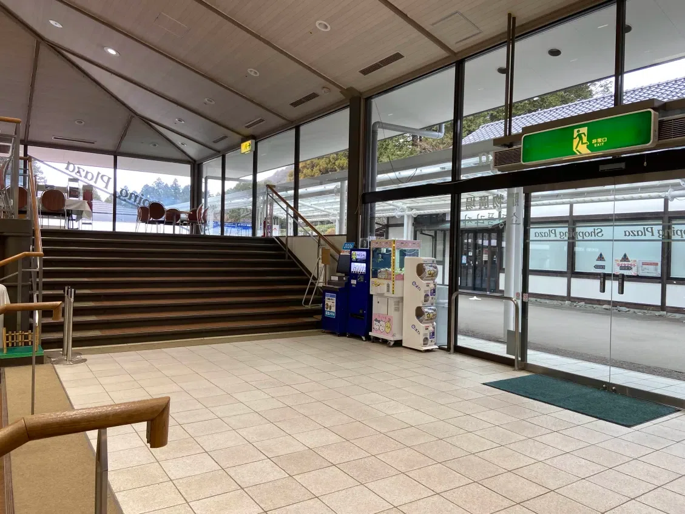
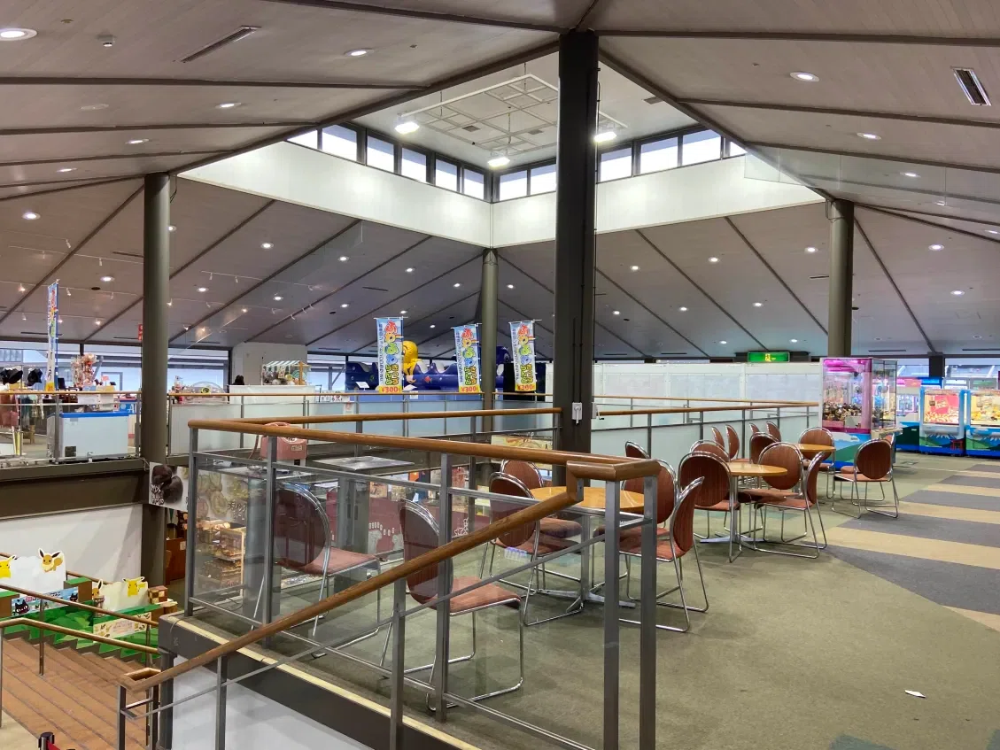
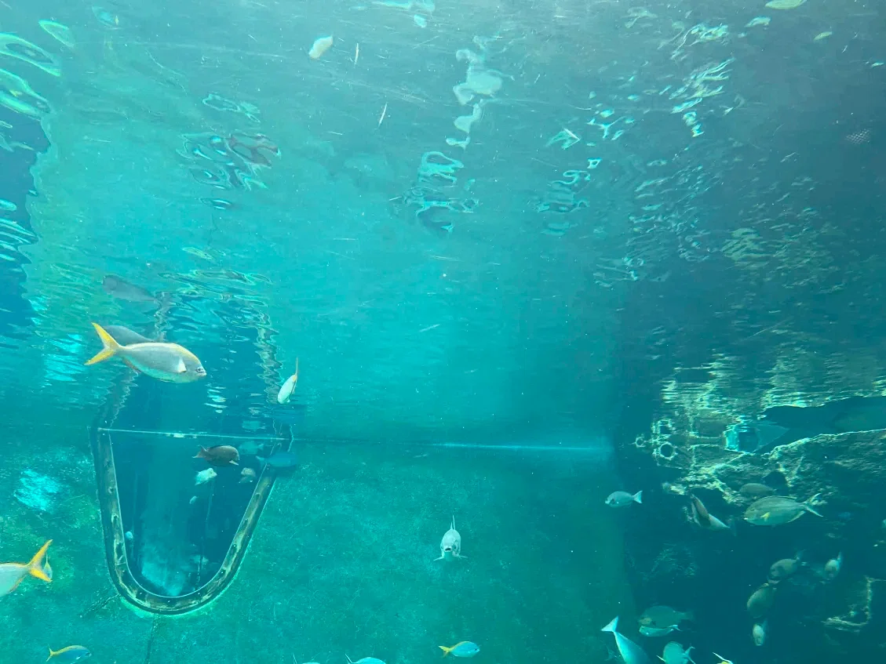

episode 10 / 11
第10話 箱根の思い出
父上エッセイ
目次へ戻る東京の小学校は結構遅くまで冬休みが続くので、そのギリギリのところで行ってきた……ら、「リミナルスペース！？！？！？」って動揺するレベルで空いている場所にしばしば出くわしてかなり過ごしやすかったので、冬休みラストの箱根は結構アリかもしれません。すごく楽しかったです！！！！

マジで～！？

記憶の中では、この辺信じられないほど混んでいたはずなンですが……。

おさかな、キレ～～～～。
ｱﾋﾙﾁｬﾝもﾊｸﾁｮｳﾁｬﾝもいました。ｶﾜｲｲﾔｯﾀｰ‼‼‼‼ ｱﾋﾙﾁｬﾝには有料の餌をあげられます。
以下、雑多な思い出と旅行の話。
私と箱根の縁はやや深いのだが、私個人が箱根に強い興味を持ったことがないのであんまり詳しくない。
「変わった電車が……あるよね……」とか「船があった……」「お土産屋さんの、キーホルダーを見ていた記憶がある……」みたいな、とにかくフワっとした思い出しかないので、私から箱根旅行の情報を聞き出そうとした者はもれなく後悔することになっている。
孫の私はそんな風だったけれど、生まれも育ちも東京である母方祖父母はいつも箱根に恋焦がれていた。
箱根で触れることの出来る、穏やかで風雅な自然を愛していたようだ。
東京の家は狭すぎて帰省に向かないものだから、我々家族が帰省しようとすると「ウチは狭いから娘夫婦や孫を受け入れる場所はないわ……そうだ！ 東京を帰省場所にするくらいなら、帰省代わりにみんなで箱根に行きましょうよ！！」と滅茶苦茶な提案を行い、祖母マネーの力で一族郎党の箱根行きを強行していたくらいである。
箱根には新宿区民用の保養所？ みたいなものがあって、そこはあじさい荘という名前だった。
バリキャリの祖母マネーにも限界があるので、そこじゃないと一族郎党で箱根に泊まるなんて豪勢なことはできなかったのだ。あじさい荘は比較的お手頃な宿泊価格なのに異様に充実した施設で、施設自体に感激したことは覚えている。ネットで探してもほとんど情報が出てこないので、かなり前になくなってしまったようだ。あじさい荘がなくなってしまってさみしい。
子どもの頃は祖母と一緒に、何度もあじさい荘で夏やすみのお盆を過ごしたものだが……。
……。
……。……。
……この祖母というのがかなり癖の強い人で、正直私はこの人と旅行に行くのは嫌だった。
質素倹約の心が間違った方向に発達した人で、レストランなどに置いてある無料の紙ナプキンや砂糖は黙って全部カバンに入れて持ち去ろうとするし、宿泊所では自分のスリッパを見失い、げた箱を指さして「スリハイ、あそこから適当にとってきて！！」と小学校低学年の私に指示、私が「いや、あれは全部明らかにほかの人のものだよ」と口下手ながらに抵抗すると「人のことなんかどうだっていいでしょう！！」と、低学年相手に物凄い怒り方をする人だったので、旅行というか、もう祖母自体が得意ではなかった。彼女は仕事をバリバリやる人で、自分の稼ぎだけで家族を養い、さらに子ども二人を大学にまでやった凄い人ではあるのだが、とにかく人の言うことを聞かなくて、副業禁止の仕事についているのに自宅で堂々と闇学習塾を開業、もちろん即近所の人に密告されて家に警察の大群が突入してきたことまである……そんな物凄い人なのだ……。
箱根は何にも悪くないのだが、箱根には祖母に関する微妙な思い出ばっかりあって、正直箱根に対する私の印象はかなり微妙だ。そうでなくても箱根という場所はハイシーズンには信じられないほど混むし、我々が動けるのはハイシーズンだけなんだから毎回モロに人ごみの苦しみを味わうしかないし、苦しむってわかってるのにあえていく必要は……。
「箱根がいいんじゃないかな」
という夫の言葉とともに、２０２６年の冬休みラストに箱根に行くことが決定した。
子ども達による「ぼくたちはいつもがんばっているので、りょこうというものにいってみたいです👦👶」というリクエストを延々無視し続けることもできず（我が家の子どもたちの抱えるストレスはそれなりに危険な規模となっているのだ）、私がシワシワの顔でいくつか考え、提案したプランの中で……採用されてしまったのだ。箱根案が……。
クマが出ないから安心な千葉、大きなプールがあるので子どもがとりあえず満足するであろう三浦半島の案はなんか却下されてしまった……。
我々夫婦は似た者同士でくっついたので、二人とも旅行にさほど興味がなく、旅行スポットは親に連れていかれた場所しか知らず、新規開拓に対する意識もかなり低い。
ゆえに、人から「旅行に行きたい」と言われたときに提案できる場所もそんなになくて、複雑な思い出がいっぱいあるのに箱根に行くことになってしまって……。
（箱根に来ちゃったな……）
箱根のロープウェー乗り場に来てしまった。大涌谷に行くためだ。記憶の中では激混みで、満員電車みたいにぎゅう詰めになりながらつり革を握っていたハズなのだけれど、普通に空いていたし普通に座れたのでかなり不思議な気持ちになった。
おやつ時の近い箱根の空は快晴で、富士山がよく映えていた。
（大涌谷、曇ってるイメージしかなかった……晴れてる日もあるんだ）
サクっと大涌谷についてしまった。
青空の下に広がる雄大な景色に浸り、「もう飽きたもう帰る！！！！」と騒ぎ出す子どもたちをなだめすかして、たまたま目に入ったジオミュージアムへ。小学生にちょうどいい展示や説明がいっぱいあったので、これは予想以上に喜んでくれた。大涌谷よかったです。大涌谷いいですよ。子どもたちは火山自体には秒で飽きてしまった一方で、夫は結構長居していろんな写真を撮りたがっていたので彼らの間を行き来するのは大変でしたが……。
ロープウェーで元の場所に戻って、宿で夕食、就寝、起床。大賑わいしている食堂を見て、夫が「こういうの久しぶりだなあ～」と嬉しそうにしていてそれがかなり嬉しかった。
そのままチェックアウトして箱根園へ。
箱根園は先述した通り水族館がかなり良かった。箱根園には他にもいろいろ見どころはあったのだが、結構、全部、容赦なく高額でしたね……（遠い目）
でも次子が「これはぜったいにひつよう！！！！！」と叫んで買っていたプラスチック製の忍者の日本刀は４００円でした。そこは子どもにやさしいおねだんで助かった……。
長子は水族館で餌をあげたアヒルの思い出を持って帰りたかったらしく、フワフワのｱﾋﾙﾁｬﾝのぬいぐるみを買って大事そうに抱きしめていた。
午後は箱根彫刻の森美術館へ。自分が子どもの頃に大好きだった「しゃぼん玉のお城」が老朽化で消えていたのはショックだったけれど、私が子どもの頃にはなかった体験型アート「ネットの森」が子どもたちに大ウケだった。なんでもキッズユーチューブでちょいちょい話題になっている激アツオモシロスポットらしい。思春期の入り口に差し掛かって沈んだ顔をすることの多い長子が「おもしろかった」と何度も言っていたのが本当に良かった。でも、ネットの森の最寄りのトイレはやばかったですね。トイレットペーパーどこにもなかった……なにあれ？ 盗まれたん……？
「これは綺麗でかっこいいから間違いなく子どもたちにウケるな」と思っていたステンドグラスの塔こと「幸せをよぶシンフォニー彫刻」は、いざ入ってみると子どもたちにとっては結構怖かったみたいだけれど、それでも彼らは長居してグラス越しに差し込む光を眺めていた。でも次子は塔のてっぺんには登れなくてギブアップしてましたね。そんなに怖かったか……。
子どもたちは二人とも彫刻の森美術館を楽しんでいて、程よく空いている足湯を楽しんだり、様々な彫刻の前でピース付きの自撮りをしていたり（子どもも自撮りをするのか！！ 初めて知った！！！！）、お土産屋さんで８００円くらいするユラユラ揺れる置物を買ったりしていました。……これ、あれじゃないか？ 人んちに行ったら玄関とかテレビの上とかにおいてある、誰がいつなぜ買ったのかよくわからない置物じゃないか！？ ウチにもついにこのよくわからない置物がおかれる日が来たのか……！ と、妙に感慨深い気持ちになりながら車で帰路に……。
車の窓ガラスから外を見る。空は相変わらず晴れていた。
日が暮れた後の光を浴びる山の稜線を見ながら、夜の色が濃くなっていく草木を見ながら、峠道ならではの変な道路標識を見ながら、風雅なしつらえのお土産屋さんや宿泊施設の橙色の明かりを見ながら、風雨にさらされて容赦なく朽ちている巨大なホテルやレストラン、別荘などの廃墟を見ながら……この場所に恋焦がれていた祖父母のことを思い出す。
空はすぐに夜の色になって、高速沿いのサービスエリアで晩御飯を食べて、箱根旅行は無事に終わった。子どもたちは旅の間中ちょいちょい喧嘩したり泣いたりしていたけれど旅行自体は楽しかったようで本当に良かった。
行きも帰りもめちゃめちゃ難しい道を長時間車で走ってくれた夫にはいくら感謝してもしきれない。道は車一台分の細さしかないのにムチムチのでっかいバスが向こうから走ってくるみたいなことが結構あってヒヤっとした。切り抜けてくれた。ありがとう夫。ありがとう人の形をした救済……。
それでは今日はこんなところで。長文乱文失礼しました。
出来れば帰ってすぐにこの旅の記録を描きたかったのだけれど、この旅で次子がどこかで拾ってきたらしい胃腸に来る風邪が数日おきに家族の誰かにうつり続けて、この１月は家族全員マアマア酷い目にあっていたので、noteを書くのがこんなに遅くなってしまいました。手洗いうがいはしっかりしなければなりませんね。手洗いうがいだけじゃなくてね、その他もろもろのいろんなことにも気を付けてね、この一年も、なんとか生き延びていきましょう……ウウッ……。
（おわり）